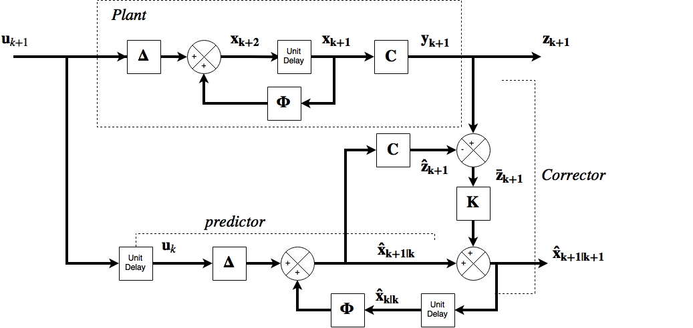

So far deterministic conditions were assumed. This means that the system models can be initialized correctly and the outputs are predictable assuming the inputs are known. In stochastic systems the presence of random noise makes it impossible to predict with certainty the values of the signals at any given time.
The Filtering Problem
The observers designed so far have deterministic models. In practice a system's inputs and outputs may be heavily affected by noise. The Kalman filter presents a solution to the problem.
The Kalman-Bucy Filter
For a discrete time system of the form
$$
\mathbf x_{k+1}=\mathbf \Phi \mathbf x_k + \mathbf \Delta \mathbf u_k \\ \ \\
\mathbf y_{k+1}=\mathbf C \mathbf x_{k+1}
$$
If the system has a random vector of noise signals \(\mathbf w(t)\) representing noise and modelling errors and the output also has errors accounted for in the form of a vector \(\mathbf v(t)\) representing measurement noise, discretization errors etc. The model is now modified
$$
\mathbf x_{k+1} = \mathbf \Phi \mathbf x_k + \mathbf \Delta \mathbf u_k + \mathbf \Gamma \mathbf w_k\\ \ \\
\mathbf z_{k+1} = \mathbf C\mathbf x_{k+1} + \mathbf v_{k+1}
$$
where the measurement errors are coupled with the matrix \(\mathbf \Gamma\). Now the only signals available are the input and measurement signals \(\mathbf u\) and \(\mathbf z\) amd a meaningful estimation of \(\mathbf {\hat x}\) for the variable \(\mathbf x\) is sought after.
if all information up to an instant \(k+1\) is given then
$$
\mathbf {u_0,\ u_1,\ u_2,\cdots,\ u_k,\ u_{k+1}}
$$
amd
$$
\mathbf {z_0,\ z_1,\ z_2,\cdots,\ z_k,\ z_{k+1}}
$$
will be known. The information can allow an estimation of \(\mathbf x_{k+1}\) .
Estimation's
The best (expected value) estimate of \(\mathbf x\) at a step \(i\) is denoted by \(\mathbf {\hat x}_{i|j}=E[\mathbf{x}_{i|j}]\). This information assumes all information is given up to step \(j\). The task is to find the value of \(\mathbf{\hat x}_{k+1|k+1}\).
The filter mathematics takes a recursive scheme. The previous estimate of \(\mathbf{\hat x}_{k|k}\) is assumed available, and the intial value. Assuming zero noise signals gives
$$
\mathbf{\hat x}_{k+1|k} = \mathbf \Phi \mathbf{\hat x}_{k|k} +\mathbf \Delta \mathbf u_k
$$
and then a one-step ahead predicted measurement is computed,
$$
\mathbf {\hat z}_{k+1}=\mathbf C\mathbf {\hat x}_{k+1|k}=\mathbf C (\mathbf \Phi \mathbf{\hat x}_{k|k} +\mathbf \Delta \mathbf u_k)
$$
and at time \(k+1\) the value \(\mathbf z_{k+1}\) is obtained from the plant ouput and the prediction error is
$$
\mathbf {\bar z}_{k+1} = \mathbf z_{k+1} -\mathbf {\hat z}_{k+1}
$$
And a proportion of the prediction error is added to the state vector
$$
\mathbf{\hat x}_{k+1|k} = \mathbf \Phi \mathbf{\hat x}_{k|k} +\mathbf \Delta \mathbf u_k + \mathbf K \mathbf {\bar z}_{k+1}
$$
The \(\mathbf {\bar z} \) information is newly added to the system and is often called the innovations sequence. The matrix \(\mathbf K\) is called the Kalman matrix. These equations now constitute a predictor corrector system. The above equation can be reduced by susbstituting the equation for the predictive error
$$
\mathbf{\hat x}_{k+1|k} = [\mathbf I - \mathbf K \mathbf C][\mathbf \Phi \mathbf{\hat x}_{k|k} +\mathbf \Delta \mathbf u_k] + \mathbf K \mathbf { z}_{k+1}
$$
And this equation represents a recursive estimator since the new estimate depends only on the output \(\mathbf z_{k+1}\) and the previous estimate \(\mathbf {\hat x}_{k|k}\) and the previous input \(\mathbf u_k\). The choice of the Kalman matrix determines the systems performance.
If the noise signals are zero the system becomes the Luenberger oberserver, however the filter gain matrix (Kalman) values must be chosen such that the eigenvalues of \([\mathbf I-\mathbf K\mathbf C]\mathbf\Phi\) are greater than the plant eigenvalues \(\mathbf \Phi\).
Kalman Filter
This is exactly the same as the Luenberger observer, but with noise signals present. The signal \(\mathbf z\) are now random variables, and the estimation error is
$$
\mathbf {\bar x}_{k+1} = \mathbf x_{k+1} \mathbf {\hat x}_{k+1|k+1}
$$
and this is a function of the Kalman matrix \(\mathbf K\). The covariance matrix of the estimation error is
$$
\mathbf P_k = E[\mathbf{\bar x}_k\mathbf{\bar x}_k^T]
$$
The design now depends on the choice of the Kalman matrix to minimize the covariance matrix. The Kalman Filter can also be described as a minumum variance estimator. The Kalman filter is defined by
$$
\mathbf P_k^* = \mathbf \Phi\mathbf P_k\mathbf \Phi^T+\mathbf \Gamma \mathbf Q\mathbf \Gamma^T
$$
and
$$
\mathbf K_{k+1}=\mathbf P_k^*\mathbf C^T[\mathbf C\mathbf P_k^*\mathbf C^T+\mathbf R]^{-1}
$$
$$
\mathbf {\hat x}_{k+1|k+1}=[\mathbf I-\mathbf K_{k+1}\mathbf C][\mathbf \Phi\mathbf {\hat x}_{k|k} + \mathbf\Delta \mathbf u_k] + \mathbf K_{k+1}\mathbf z_{k+1}
$$
then
$$
\mathbf P_{k+1}= [\mathbf I-\mathbf K_{k+1}\mathbf C]\mathbf P_k^*
$$
so the Kalman matrix is chosen based on the previous error and covariance and noise statistics to minimize the variance of the next estimate. In practice this works well for long distance space probes.
